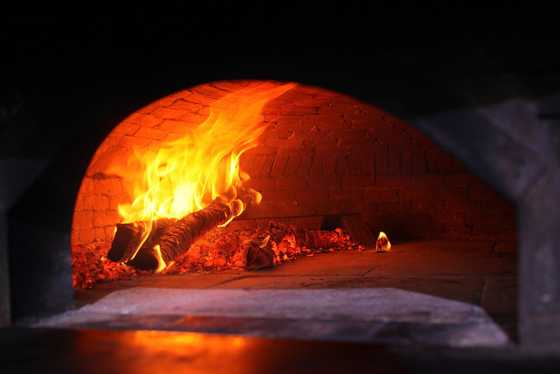
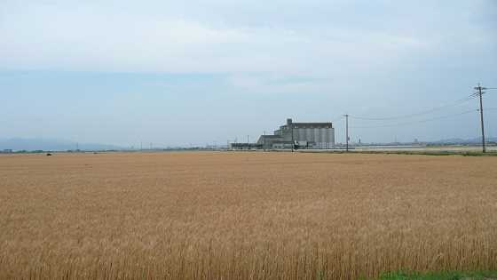
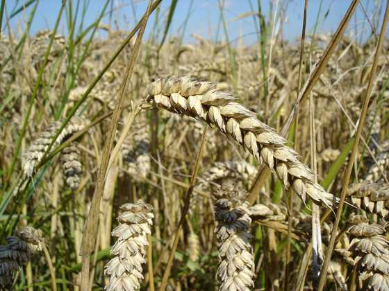
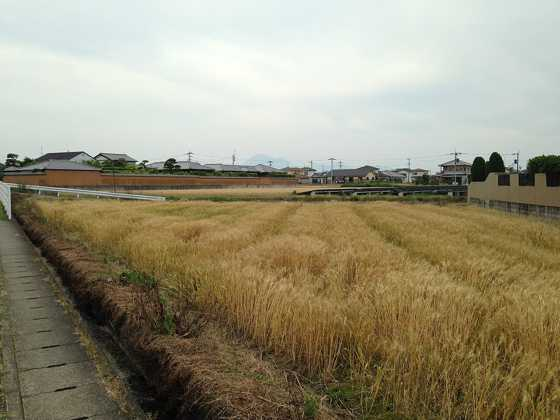
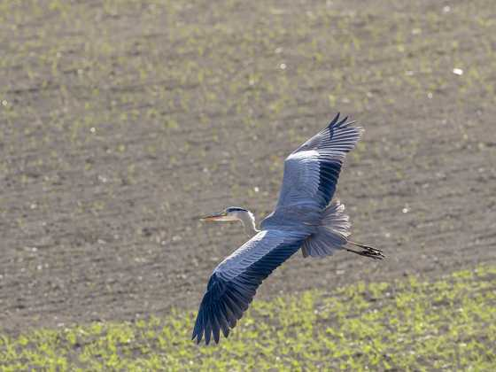
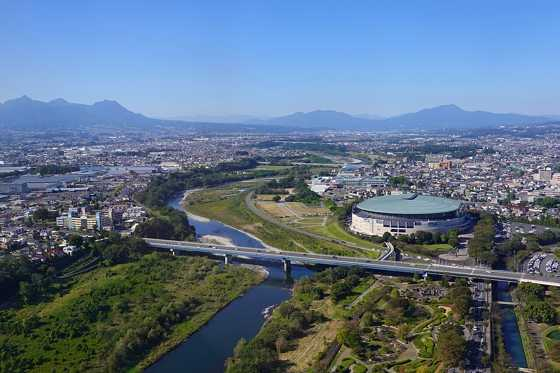
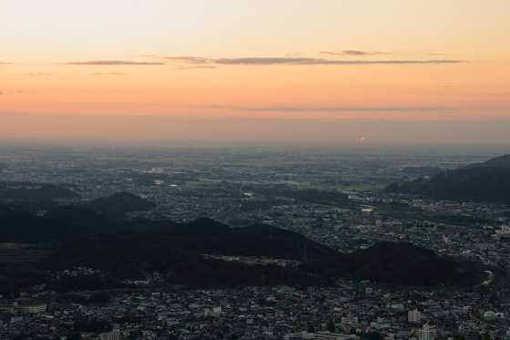
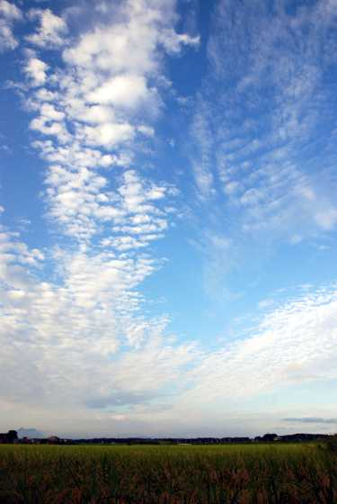
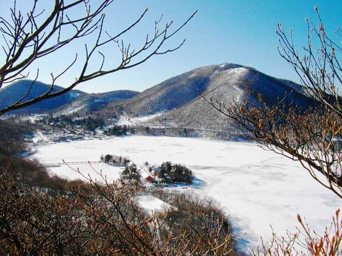

お店の由来・想い
Instagramのプロフィールには、「修行先で出会ったおいしいパンを地元の人達にも食べてもらいたい!その一心で『ぱんや赤石』始めました!」と綴られています。
パンは、ホシノ天然酵母を使い、長時間かけて熟成発酵させて作るとのこと。無添加で、しっとりと甘いパンだと紹介されています。
地元・伊勢崎の人たちに、修行先で出会った味を届けたい。そんな素直な想いから生まれたパン屋さんです。



※ 内容はInstagramのプロフィール・投稿に基づきます。店名の由来など確認できていないことは掲載していません。
口コミ
以下は制作側が作成したイメージ例で、実際のお客様の声ではありません。
イメージ例
天然酵母のパンは噛むほどに甘みがあって、朝ごはんが楽しみになりました。
イメージ例
しっとりとしたやさしい食感で、家族みんなでおいしくいただきました。
イメージ例
近所にこんなパン屋さんができてうれしいです。また寄りたいと思います。
アクセス
| 住所 | 〒372-0054 群馬県伊勢崎市柳原町24-6 |
|---|---|
| 電話 | 準備中 |
| https://www.instagram.com/pan_aka.2026 |




